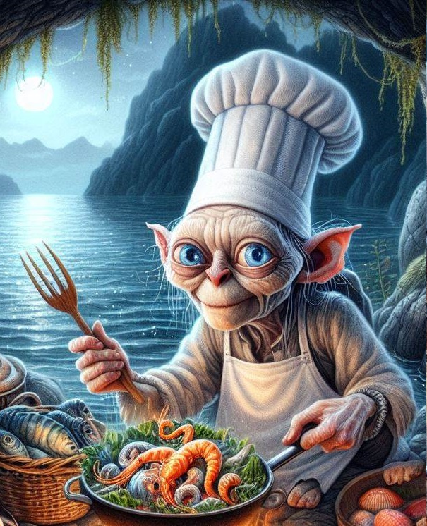

Bienvenidos a Mar de Luna
En Mar de Luna, nos enorgullece ofrecer una experiencia culinaria única, donde cada plato refleja nuestro compromiso con la excelencia y el sabor auténtico del mar. Con una trayectoria arraigada en la pasión por la cocina y el respeto por los ingredientes frescos y de calidad, hemos construido un legado que nos distingue en el mundo gastronómico.
Nuestros Valores:
Calidad: Nos esforzamos por ofrecer mariscos frescos y seleccionados con el más alto estándar de calidad en cada uno de nuestros platos.
Profesionalismo: Nuestro equipo está compuesto por expertos en el arte culinario, comprometidos con la perfección en cada detalle y con la satisfacción de nuestros comensales.
Tradición: Con décadas de experiencia en la preparación de delicias marinas, honramos la tradición culinaria y celebramos la riqueza de sabores que el mar nos ofrece.
En Mar de Luna, cada plato cuenta una historia de dedicación y pasión por la cocina. Únete a nosotros para descubrir un mundo de sabores frescos y auténticos, donde cada bocado es una celebración del mar y su abundancia.
¡Bienvenidos a una experiencia gastronómica inolvidable en Mar de Luna!

¡Hola! Soy Francis Gollum, el chef ejecutivo en Mar de Luna. Mi pasión es crear experiencias culinarias que celebren los sabores del mar. ¡Únete a mí en un viaje gastronómico donde cada plato cuenta una historia de frescura y creatividad!